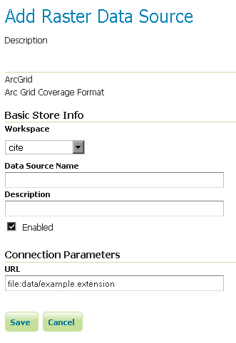

ArcGrid¶
ArcGrid는 ESRI가 제작한 커버리지 파일 포맷입니다.
Adding an ArcGrid data store¶
새 데이터 저장소를 추가할 때 기본적으로 Raster Data Sources 목록에 ArcGrid 옵션이 보일 것입니다.

래스터 데이터 저장소 목록의 ArcGrid 옵션
Configuring a ArcGrid data store¶

ArcGrid 데이터 저장소 설정하기
| 옵션 | 설명 |
| Workspace | |
| Data Source Name | |
| Description | |
| Enabled | |
| URL |
이전: ImageMosaic